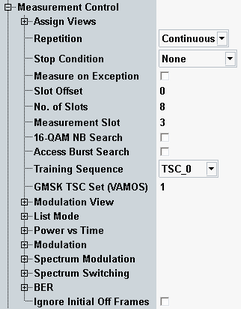

The "Measurement Control" parameters configure the scope of the measurement. They are described in this section and the following sections.
See also: "Statistical Settings"

Selects the view types to be displayed in the "Overview" dialog. The R&S CMW does not evaluate the results for disabled views. Therefore, limiting the number of assigned views can speed up the measurement.
Disable the "Spectrum … Time" views if the results are not needed.
Remote command:Defines how often the measurement is repeated if it is not stopped explicitly or by a failed limit check.
- Continuous: The measurement is continued until it is explicitly terminated. The results are periodically updated.
- Single-Shot: The measurement is stopped after one statistics cycle.
Single-shot is preferable if only a single measurement result is required under fixed conditions, which is typical for remote-controlled measurements. Continuous mode is suitable for monitoring the evolution of the measurement results in time and observe how they depend on the measurement configuration, which is typically done in manual control. The reset/preset values therefore differ from each other.
- "None": The measurement is performed according to its "Repetition" mode and "Statistic Count", irrespective of the limit check results.
- "On Limit Failure": The measurement is stopped when one of the limits is exceeded, irrespective of the repetition mode set. If no limit failure occurs, it is performed according to its "Repetition" mode and "Statistic Count". Use this setting for measurements that are intended for checking limits, e.g. production tests.
Specifies whether measurement results that the R&S CMW identifies as faulty or inaccurate are rejected. A faulty result occurs, for example, when an overload is detected. In remote control, the cause of the error is indicated by the "reliability indicator".
- Off: Faulty results are rejected. The measurement is continued. The statistical counters are not reset. Use this mode to ensure that a single faulty result does not affect the entire measurement.
- On: Results are never rejected. Use this mode for development purposes, if you want to analyze the reason for occasional wrong transmissions.
- "Slot Offset": specifies the start of the measurement interval (measured multislot range) relative to the GSM frame boundary, detected with an internal trigger ("Power" or "Acquisition").
- "No. of Slots": specifies the number of slots to be measured and displayed in the different power and modulation views. The R&S CMW can measure between 1 and 8 consecutive slots (1 GSM frame).
- "Measurement Slot": selects the slot to be used for the modulation and spectrum due to modulation measurement. The measurement slot must be part of the measured multislot range, therefore:
Slot Offset ≤ Measurement Slot ≤ Slot Offset + No. of Slots – 1
The measurement slot must be active in multislot configurations, because it provides the 0-dB reference in the power vs. time diagram.
In the standalone (SA) scenario, these parameters are controlled by the measurement. In the combined signal path (CSP) scenario, they are controlled by the signaling application.
Enables or disables the search for 16-QAM-modulated normal bursts (with option R&S CMW-KM201). With enabled 16-QAM NB burst search, the R&S CMW can measure 16-QAM-modulated normal bursts and other burst types in one multislot range.
The detection of 16-QAM busts is based on the π/4 rotation angle of the I/Q symbols (see also "Multi Evaluation > Rotation"). With disabled 16-QAM NB search, the demodulation of 16-QAM bursts fails. If only one slot is active, the R&S CMW either detects a 8PSK-modulated burst with a large frequency error or encounter a synchronization problem.
Remote command:Enables or disables the search for GMSK-modulated access bursts. With enabled access burst search, the R&S CMW can measure normal and access bursts in one multislot range.
The detection of access bursts is based on the three training sequences for access bursts specified in the GSM standard. The "Training Sequence" setting has no impact on the access burst search. The transmission of access bursts is part of the connection setup procedure. Moreover, a mobile in packet data mode can use periodic access bursts for the transmission of CONTROL_ACK_TYPE messages.
The access burst search is time-consuming because the R&S CMW has to search for one out of three possible training sequences within a relatively wide time interval.
Remote command:Selects the training sequence of the analyzed bursts: With a specific training sequence setting, the R&S CMW analyzes bursts with this training sequence only. The setting has no impact on the access burst search.
- TSC 0 to TSC 7: One of the 8 26-bit training sequences defined in the GSM standard
- Dummy: GSM-specific dummy burst
- TSC any: Search for any of the training sequences TSC 0 to TSC 7; use the detected training sequence for synchronization.
- Off: Do not decode the training sequence, measure any burst. This mode is appropriate for a rough analysis only because the R&S CMW cannot use the training sequence for synchronization and for compensation of a time drift.
In the standalone (SA) scenario, this parameter is controlled by the measurement. In the combined signal path (CSP) scenario, it is controlled by the signaling application.
Specifies the expected VAMOS training sequence code (TSC) set of the measured GSM uplink signal. With a specific TSC set selection, the R&S CMW analyzes bursts with this TSC set only.
The two TSC sets 1 and 2 identify the uplink subchannel for a VAMOS user. All mobiles must support TSC set 1, but only mobiles explicitly indicating support for VAMOS must also support TSC set 2. VAMOS stands for voice services over adaptive multi-user channels on one slot and is defined in 3GPP TS 45.001. For a short introduction, refer to the documentation of the "GSM Signaling" application.
Remote command:Skips the initial off frames to avoid trigger timeout in access burst measurement in idle mode.
Remote command: